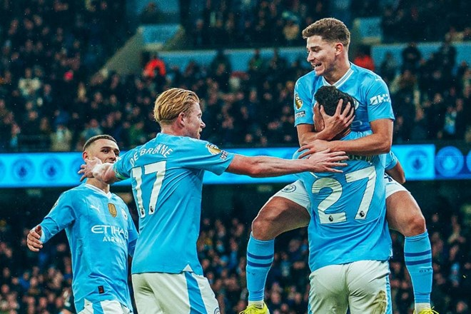

Manchester City
O Manchester City Football Club, ou simplesmente Manchester City, é um clube de futebol profissional inglês sediado em Manchester que compete na Premier League, a liga de maior nível da Inglaterra.
Alguns dos Títulos Conquistados
- Mundial de Clubes: 1 (2023)
- UEFA Champions League: 1 (2022/2023)
- Supercopa da Uefa: 1 (2023)
- Supercopa da Inglaterra: 3 (2012, 2018 e 2019)
- Copa da Inglaterra: 3 (2010/2011, 2018/2019 e 2022/2023)
Imagem do Time
